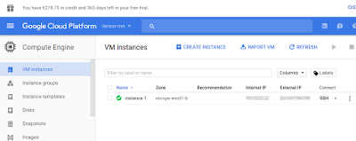
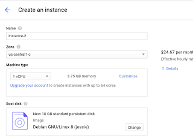

Bulut Uzerinde Unix: GCloud
Bilgisayarı almak, taşımak, üzerinde işletim sistemi kurmak, sonra onu İnternet'e açmak için uğraşmak.. Bunlar saç yoldurucu olabilir. Amazon, Google gibi şirketler bu alanda uzun süredir servis sağlıyorlar. İnternet üzerinde isteğe göre, istenen hacimde, istenen işletim sistemini taşıyan bir makinayı yaratmak bulut servisleri ile çok kolay. Amazon EC2 sisteminden önce bahsetmiştik. Eğer Amazon'un servisi memnun etmiyorsa, Google seçilebilir. İlk hesap açımında $300 dolarlık hediye de veriyorlar - rekabet güzel şey! Amazon müşterilerini kendilerine çekmeye uğraşıyorlar.
Bu yazıda komut satırından SSH ile erişilebilecek servis tarzı bir makina yaratmayı işliyoruz. Google bu servise "hesaplama motoru (compute engine -CE-)" diyor. Makina yaratmak için önce hesap açmak lazım.
https://cloud.google.com
Kredi kartı, ya da banka bilgileri verildikten sonra (hediye miktarı tüketilmeden para alınmayacak tabii) giriş tamamlanır. Ardından Google servislerine komut satırı erişimi sağlayan SDK lazım,
https://cloud.google.com/sdk/
Linux icin
https://cloud.google.com/sdk/docs/quickstart-linux
Indirdikten sonra cd google-cloud-sdk, ve ./install.sh.
Sonra gcloud init ile kurulum tamamlanır, sorulan sorulara evet deyin, sisteme girme (login) sorusuna evet deyince tarayıcıya aktarılıyorsunuz, google şifresi ile giriş yapınca bağlantı kuruluyor.
Yeni makina yaratmak gcloud komut satırı ile olabilir, ama en rahatı başta GUI kullanmak. Bir proje yaratılıyor, sonra proje seçiliyor. Ana konsoldan "Go to compute engine dashboard" ile CE'ye gidiliyor. Burada
Benim daha önce başlattığım makina burada görülüyor. Yeni makina için "create instance" tıklanır, seçenekler hangi tür işletim sistemi (bizde Debian), makina donanımı (machine type), belleği, mikroişlemci sayısı, vs., makinanın hangi bölgede başlatılması istendiği (zone) seçiliyor. Bölge mesela makina ABD'de mi, Asya'da mı, Avrupa'da mı başlatılsın? Eğer müşteriye dönük bir uygalama servis edilecekse müşteriye yakın makinalar daha iyi olur, cevap hızının optimal olması için.
Bu seçimler yapılırken sağ yanda tahmini aylık bedel gösteriliyor. Makina yaratıldıktan sonra iki üstteki resimde SSH seçeneği var, bu seçenekten "view gcloud command" ile bağlanmak için gereken gcloud komut satırı komutu gösteriliyor. Bunu kopyala, yapıştır ile yerel makinamizin Unix konsoluna verip, buluttaki makinamiza ilk girişi yapabiliriz.
Makinaların ana diski kalıcıdır (persistent), yani makinayı kapatıp açınca disk üzerine yazılmış şeyler hatırlanır. Tabii sanal makina silinirse, dosyalar da silinecektir.
CE makinalarına statik IP adresi atanması mümkün, yani bu makina üzerinde Web servisi (apache gibi) başlatılınca makina o IP üzerinden erişilebilir hale gelir. DNS ile isim eşlemesi yapılınca, Google bulutu üzerinden tam işlevli Web servisi sunmak mümkün olur.
Disk Eklemek
Bir makinayi yaratirken ek disk eklemeyi secebiliriz, bu diskin olcegini de istedigimiz gibi ayarlariz. Eger disk icerigi bos (blank) olsun dediysek, o zaman SSH ile giris yaptiktan sonra diski formatlamiz gerekir. Suradan,
sudo lsblk
ile disklerin nerede olduguna bakariz, diyelim
NAME MAJ:MIN RM SIZE RO TYPE MOUNTPOINT sda 8:0 0 10G 0 disk └─sda1 8:1 0 10G 0 part / sdb 8:16 0 200G 0 disk
cevabi geldi, ben 200 GB'lik disk eklemistim, sdb altindaymis. Formatlarim,
sudo mkfs.ext4 -m 0 -F -E lazy_itable_init=0,lazy_journal_init=0,discard /dev/
Simdi diski bir dizin uzerinden monte etmek (mount) lazim. Bir dizin yaratirim, /mnt/hd2, ve
sudo mount -o discard,defaults /dev/sdb /mnt/hd2
 